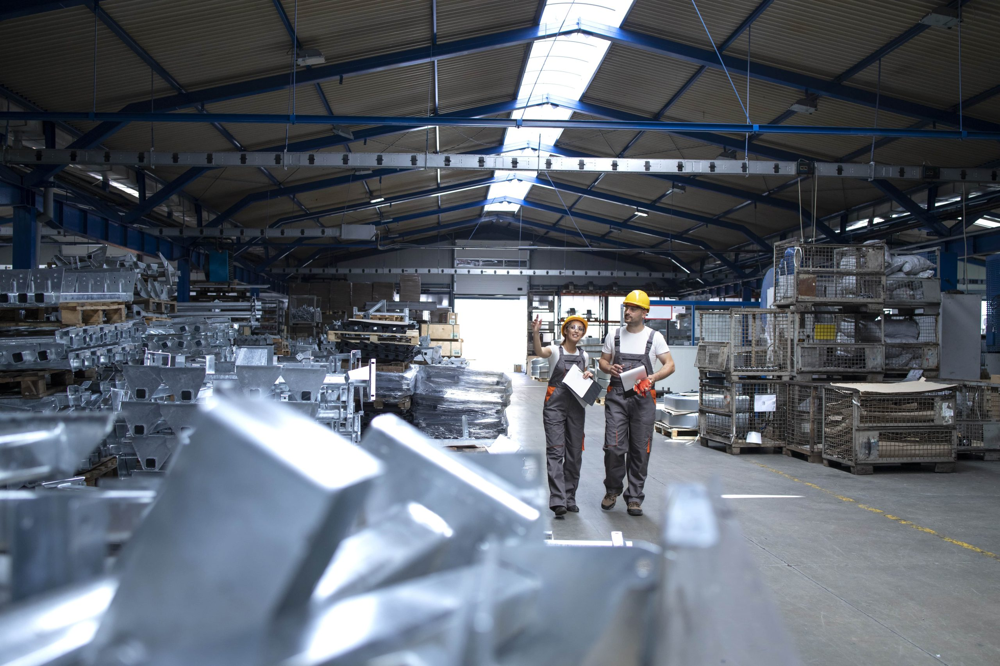

Une analyse de certains sujets tombés ces dernières années.
Prédire des sujets à venir en imaginant à l'avance comment traiter votre futur sujet.
Chaînes d'approvisionnement, industrie qui se réinvente, nouvelles tendances d'achat, droits de douane : la même approche revient chaque fois.
- 2022What issues concerning global supply chains need to be addressed?
- 2023To what extent is the manufacturing industry reinventing itself?
- 2025To what extent can new purchasing trends impact logistics and marketing?
- 2025How do tariffs affect global supply chains?
Resilient, green and closer to home: the recurring logic behind Production topics
The Production theme always returns to the same starting point: for thirty years, companies built long global supply chains to lower costs, but recent shocks have exposed how fragile this model is. Whether the question is about supply-chain issues, the reinvention of manufacturing, new purchasing trends or tariffs, the examiner is really asking how companies can produce and source goods in a world that is more uncertain, more protectionist and more demanding about sustainability. This single approach links all four questions.
The first recurring angle is fragility and dependence. The supply-chain questions point to one clear lesson: when factories in one region close, or a single shipping route is blocked, the effects spread across the world within weeks. The key knowledge is the meaning of a supply chain, the danger of relying on one supplier or one country, and the idea of resilience. The reusable strategy is diversification: spreading orders across several suppliers and regions so that a single problem cannot stop production, even if this costs more.
The second recurring angle is the return of protectionism. The 2025 question on tariffs shows that trade barriers, once expected to disappear, are back. New duties raise costs, disrupt established routes and force companies to rethink where they produce. The key ideas are tariffs, protectionism and geopolitics. The reusable response is reshoring or nearshoring: moving production back home or closer to customers to reduce transport time, tariffs and risk, even when wages are higher.
The third recurring angle is the reinvention of manufacturing through technology. The 2023 question makes this explicit. Automation and robotics make it possible to produce efficiently even in high-wage countries, weakening the old argument for offshoring. Data tools and AI allow companies to track goods in real time, predict delays and manage stock more precisely. The reusable point is that modern production is more flexible, more digital and less dependent on cheap distant labour.

The fourth recurring angle is sustainability. Long-distance transport generates large emissions, and customers, regulators and investors increasingly demand greener production. New rules require companies to measure the environmental impact of their whole supply chain, including suppliers. The key ideas are the carbon footprint, the circular economy and responsible sourcing. The reusable strategy is cleaner transport, less waste, recycled materials and products designed to last.
The most useful insight for this theme is that resilience and sustainability often point in the same direction. Producing closer to the customer cuts both risk and emissions. Working with fewer, more reliable suppliers makes it easier to check their environmental and social standards. Reducing waste lowers both costs and pollution. A shorter, smarter, greener supply chain can be stronger and cleaner at the same time. This is a powerful argument that fits almost any Production question.
There are difficulties to mention as well, because a balanced answer is always stronger. Rebuilding supply chains is expensive and slow, nearshoring may raise prices for consumers, and investing in automation and green technology requires capital that smaller firms may lack. Companies must therefore make strategic choices, deciding which products are critical and where the risks are greatest.
To handle any Production subject, a few reflexes help. Define the supply chain and the problem it faces. Name the disruption: pandemic, war, blocked route or tariff. Present the main responses: diversification, reshoring, automation and greener production. Show that resilience and sustainability reinforce each other, then acknowledge the cost. Conclude that the age of cheap, fragile, far-flung supply chains is ending, and that the future belongs to production that is closer, smarter and greener. With this base, every Production question becomes more familiar.